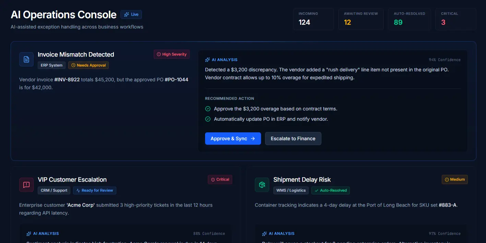
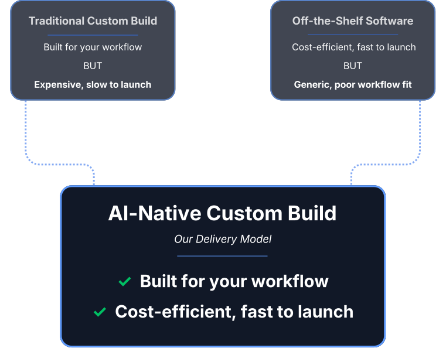

Proven AI Systems Tailored to Your Operations
Delivered in Weeks, Not Quarters
Production AI integrated directly into your workflows, designed to deliver operational impact quickly.

AI Initiatives Fail for Two Reasons.
Most AI initiatives stall for two reasons:
- Traditional system integrators move slowly and build expensive, bespoke systems.
- Off-the-shelf AI tools rarely fit real operational workflows.
We deliver custom systems with the speed and cost structure of software products.

An AI-Native Build Engine.
Our development workflow is AI-assisted end-to-end, allowing small teams to design, build, and ship production systems faster than traditional consulting delivery models.
- Built for operations — Designed to fit the systems and workflows your team already uses.
- Production-ready — Focus on shipping working systems, not prototypes.
- Designed to scale — Architecture that expands across teams and functions.

AI Systems Built for Real Operations.
We build systems that support operational workflows across finance, logistics, manufacturing, and services.
Why Organizations Choose Us
Start with One High-ROI System. Expand from There.
Most clients begin with a focused build. From there, we scale AI across functions — strategically.
Experience Delivering AI Across Industries
Integrates With Your Existing Stack
We integrate with enterprise software, data platforms, cloud infrastructure, and internal APIs.
Examples of platforms we commonly integrate with.
Real Operational Impact
- Operational Document Processing Manufacturing Client
- Internal AI Operations Assistant Financial Services Firm
- Workflow Automation System Logistics Company
MOST ENGAGEMENTS BEGIN WITH A FOCUSED OPERATIONAL SYSTEM.
Identify Your Highest-ROI AI Opportunity
Typical first systems deployed within 4–8 weeks.